BTL 1 — Báo cáo phân loại ảnh
Báo cáo tóm tắt pipeline trong notebook DL_BTL1_Image.ipynb: EDA, chia dữ liệu stratified,
timm backbone + đầu phân loại tùy chỉnh, lưới thử nghiệm (mô hình × augmentation × fine-tuning),
theo dõi Weights & Biases, đánh giá test, confusion matrix, GradCAM và demo Gradio.
Số liệu dưới đây lấy từ output notebook; hình ảnh lưu trong thư mục Image_DL/.
Dashboard W&B (training): https://wandb.ai/hai-trinh220970-ho-chi-minh-city-university-of-technology/co3133-btl1-image
01 Giới thiệu và mô tả bài toán
Bài toán phân loại đa lớp trên ảnh lá cây / sâu bệnh: mỗi ảnh thuộc một nhãn lớp tương ứng thư mục trong
crop-pest-and-disease-detection. Ảnh đầu vào được resize / crop về 224×224.
Mục tiêu tối ưu các metric như Accuracy và Macro F1 trên tập test, đồng thời ghi nhận chi phí (tham số, thời gian train, suy luận).
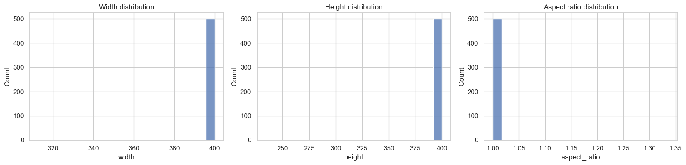
02 EDA (Exploratory Data Analysis)
Notebook quét thư mục dữ liệu, xây DataFrame đường dẫn–nhãn, in kích thước tập và số lớp, vẽ phân bố số ảnh theo lớp,
và hiển thị lưới ảnh mẫu để kiểm tra chất lượng / độ lệch lớp trước khi huấn luyện.
Thống kê từ cell: Kích thước tập (trước subsample tùy chọn): 25 170 ảnh, 22 lớp. Subsample stratified fraction = 0.5: 25 170 → 12 590 dòng. Số lớp duy nhất: 22; min / max mẫu mỗi lớp: 103 — 1 372.

03 Dataset, DataLoader & Augmentation pipeline
Chia tập stratify theo nhãn: 70% train / 15% validation / 15% test
(tương ứng 1 - val_ratio - test_ratio với val_ratio=test_ratio=0.15 trong CFG).
ImageClassificationDataset đọc ảnh RGB (PIL), có cơ chế thử lại khi file lỗi/truncated.
DataLoader dùng batch size, số worker và pin memory theo cấu hình; Windows notebook thường để num_workers=0.
Sau subsample 0.5, split stratified: train 8 813 (~70.0%) · val 1 888 (~15.0%) · test 1 889 (~15.0%) trên 12 590 mẫu.
Mỗi backbone lấy mean/std chuẩn hóa từ timm.data.resolve_model_data_config để khớp pretrain.
Khi use_aug=True, pipeline train trong notebook gồm các bước sau (eval chỉ resize + tensor + normalize):
RandomResizedCrop(scale 0.7–1.0)RandomHorizontalFlip,RandomVerticalFlip(p=0.1)ColorJitter,RandomRotation(20),RandomGrayscale(p=0.05)ToTensor+Normalize
transform = transforms.Compose([
transforms.RandomResizedCrop(IMG_SIZE, scale=(0.7, 1.0)),
transforms.RandomHorizontalFlip(),
transforms.RandomVerticalFlip(p=0.1),
transforms.ColorJitter(brightness=0.3, contrast=0.3, saturation=0.2, hue=0.1),
transforms.RandomRotation(20),
transforms.RandomGrayscale(p=0.05),
transforms.ToTensor(),
transforms.Normalize(mean=mean, std=std), # từ timm theo model_name
])
Huấn luyện có thể bật early stopping theo validation macro F1 (early_stopping_patience trong CFG; 0 = tắt).
04 Lựa chọn mô hình Backbone (4 loại)
Notebook so sánh bốn kiến trúc trong EXPERIMENT_GRID["models"]:
ResNet-18, EfficientNet-B0, ViT-Base/16, Swin-Tiny (tên đầy đủ timm:
resnet18, efficientnet_b0, vit_base_patch16_224, swin_tiny_patch4_window7_224).
Đầu phân loại tùy chỉnh: backbone trích đặc trưng + MLP (Linear → BatchNorm → ReLU → Dropout → Linear) ra số lớp.
Ba chiến lược fine-tuning: frozen, linear_probe, finetune_all (điều chỉnh requires_grad trên backbone).
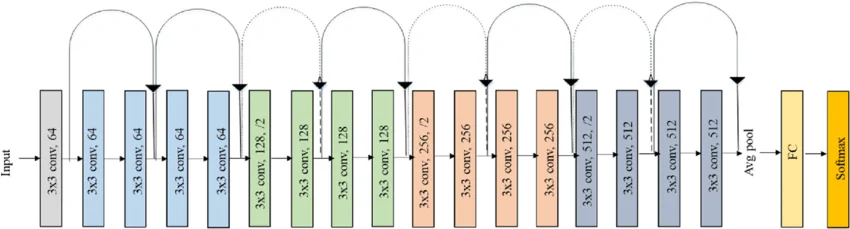
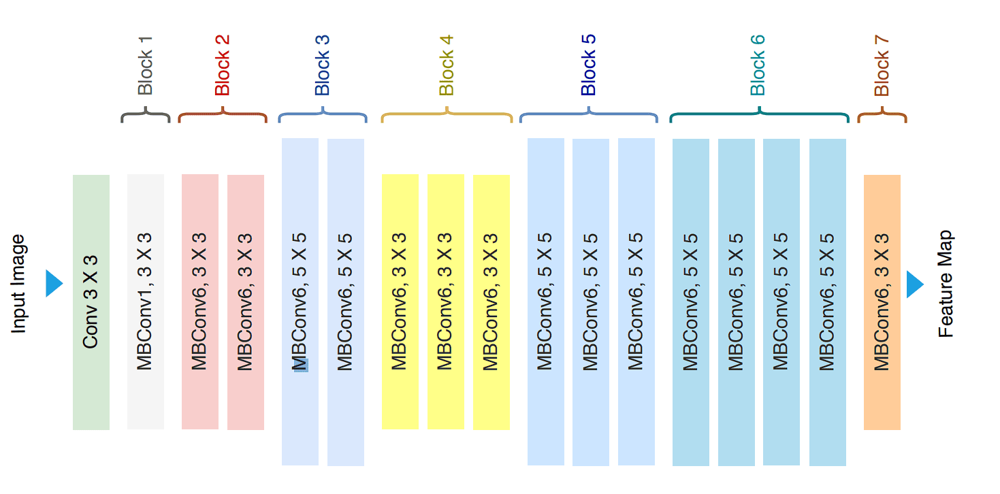
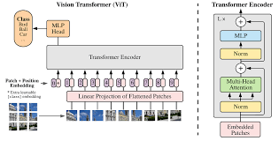
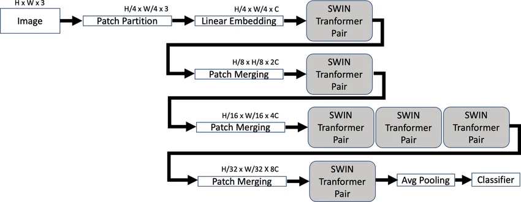
05 Kết quả Training (Weights & Biases)
Mỗi run đăng ký W&B (project co3133-btl1-image): log loss / accuracy / F1 theo epoch, learning rate và artifact.
Project đầy đủ:
wandb.ai/…/co3133-btl1-image
train/loss — ResNet18 · aug · frozen
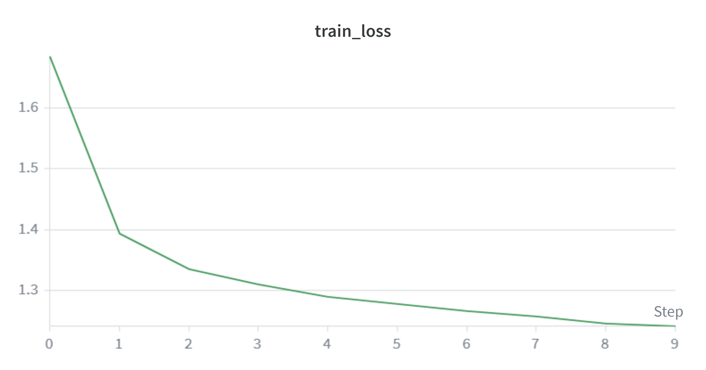
train/loss — ViT-Base/16 · noaug · finetune_all
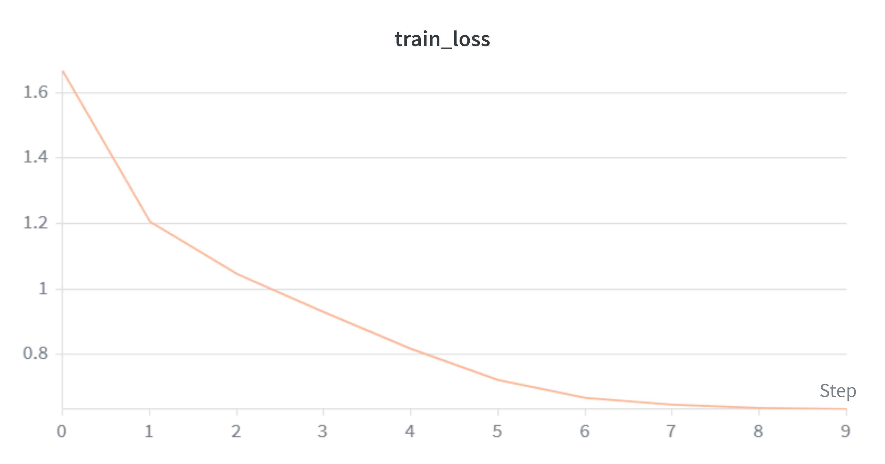
06 Kết quả thử nghiệm: bảng, biểu đồ & thảo luận
Kết quả gom từ notebook (tương đương results.csv): accuracy / precision / recall / F1 trên tập test, tham số, checkpoint, thời gian train, độ trễ suy luận.
Liên kết theo dõi đầy đủ: W&B — co3133-btl1-image.
Bảng so sánh 8 run (test set)
| run_name | model | aug | finetune | Acc % | Prec % | Rec % | F1 % | params M | train M | ckpt MB | train s | infer ms/img |
|---|---|---|---|---|---|---|---|---|---|---|---|---|
| efficientnet_b0_aug_finetune_all | efficientnet_b0 | aug | finetune_all | 90.31 | 88.76 | 89.91 | 89.07 | 4.68 | 4.68 | 18.14 | 738.4 | 3.37 |
| vit_base_patch16_224_aug_linear_probe | vit_base_patch16_224 | aug | linear_probe | 88.62 | 88.06 | 87.05 | 87.44 | 86.20 | 85.46 | 328.92 | 870.7 | 7.34 |
| resnet18_aug_linear_probe | resnet18 | aug | linear_probe | 88.25 | 88.14 | 86.47 | 86.36 | 11.45 | 8.67 | 43.77 | 0.0 | 2.72 |
| resnet18_noaug_finetune_all | resnet18 | noaug | finetune_all | 85.65 | 84.20 | 85.16 | 84.43 | 11.45 | 11.45 | 43.77 | 310.2 | 3.16 |
| vit_base_patch16_224_noaug_finetune_all | vit_base_patch16_224 | noaug | finetune_all | 85.92 | 85.38 | 84.11 | 84.35 | 86.20 | 86.20 | 328.92 | 577.2 | 4.81 |
| swin_tiny_patch4_window7_224_aug_frozen | swin_tiny_patch4_window7_224 | aug | frozen | 84.49 | 83.93 | 83.23 | 83.31 | 27.93 | 0.41 | 106.61 | 761.5 | 4.00 |
| efficientnet_b0_noaug_frozen | efficientnet_b0 | noaug | frozen | 82.05 | 80.89 | 78.72 | 79.46 | 4.68 | 0.67 | 18.14 | 338.6 | 3.16 |
| resnet18_aug_frozen | resnet18 | aug | frozen | 80.73 | 81.02 | 77.09 | 77.78 | 11.45 | 0.27 | 43.77 | 0.0 | 2.54 |
FLOPs trong notebook trả về NaN — cột bỏ qua. train_time_sec = 0 với một số run ResNet18 tương ứng cell đo thời gian / epoch không ghi nhận.
Độ trễ suy luận & throughput (ms/ảnh, FPS)
| Run | Latency (ms) | Throughput (FPS) |
|---|---|---|
| resnet18_aug_frozen | 2.573 | 388.65 |
| resnet18_aug_linear_probe | 2.134 | 468.56 |
| resnet18_noaug_finetune_all | 2.188 | 457.13 |
| efficientnet_b0_aug_finetune_all | 5.022 | 199.10 |
| efficientnet_b0_noaug_frozen | 4.927 | 202.94 |
| vit_base_patch16_224_aug_linear_probe | 3.961 | 252.49 |
| vit_base_patch16_224_noaug_finetune_all | 4.219 | 237.00 |
| swin_tiny_patch4_window7_224_aug_frozen | 6.759 | 147.95 |
Top Aug / Top No-Aug (tóm tắt cell)
Top Aug: EfficientNet-B0 aug finetune_all (early stop epoch 10); ViT aug linear_probe (10 epoch); ResNet18 aug linear_probe (0 epoch ghi nhận); Swin aug frozen; ResNet18 aug frozen. Top No-Aug: ResNet18 noaug finetune_all (9 epoch, early stop); ViT noaug finetune_all; EfficientNet noaug frozen.
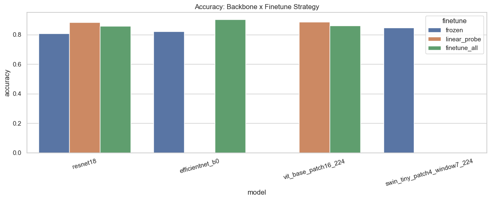

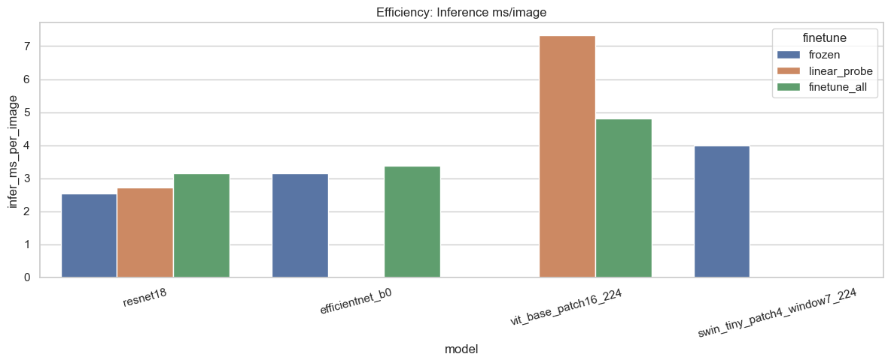
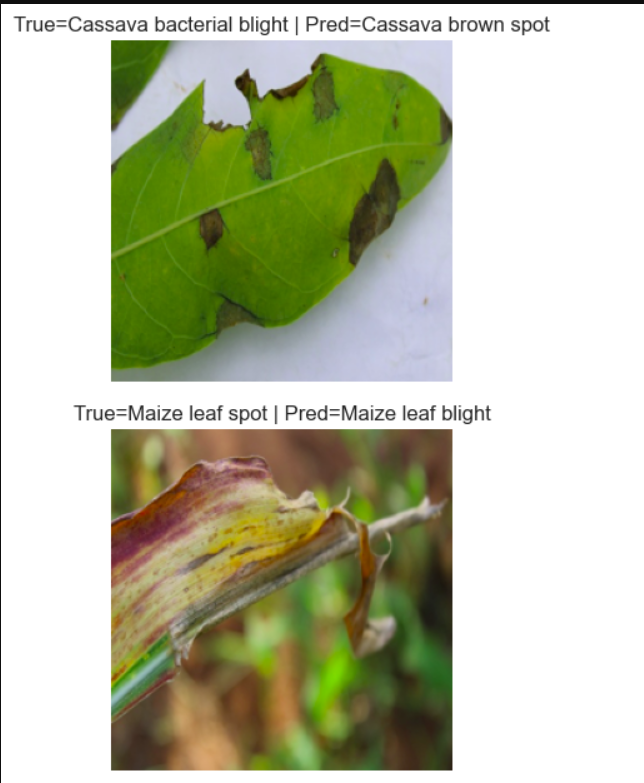
Thảo luận ngắn: Run tốt nhất toàn cụm là efficientnet_b0_aug_finetune_all (accuracy 90.31%, F1 89.07%), đứng đầu cả accuracy, precision, recall và F1 trong bảng xếp hạng metric.
Augmentation giúp EfficientNet vượt trội so với cùng backbone noaug + frozen (82.05% acc).
ViT + linear_probe + aug đạt acc/F1 cao thứ hai với phần lớn tham số chỉ huấn luyện phần đầu (trainable ~85.5M).
ResNet18: linear_probe + aug rất cạnh tranh (88.25% acc) với ít tham số train hơn full finetune; frozen + aug yếu hơn rõ (80.73%).
Throughput: ResNet18 aug linear_probe nhanh nhất trong bảng đo (~468 FPS); Swin aug frozen chậm nhất (~148 FPS) — trade-off độ chính xác / chi phí suy luận cần cân nhắc khi triển khai.
Confusion matrix (counts) — cm_*.png
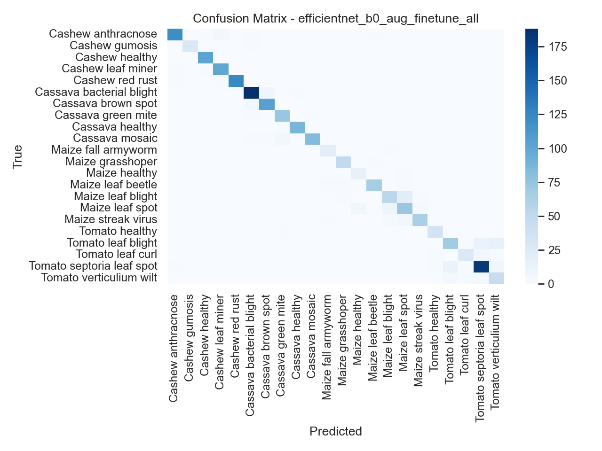
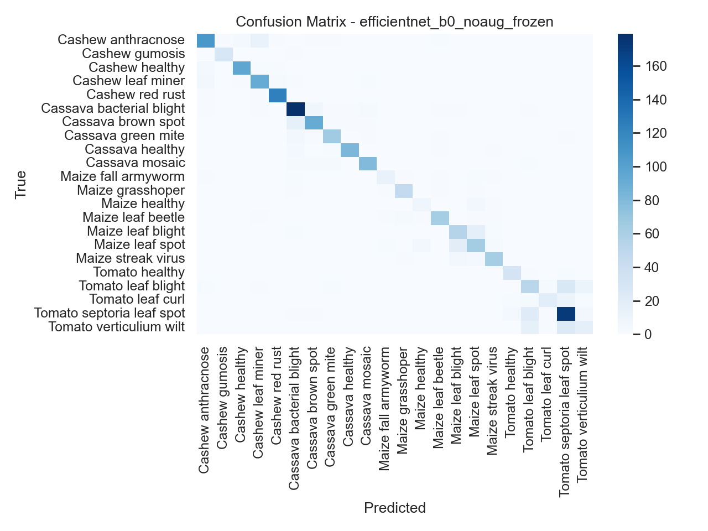
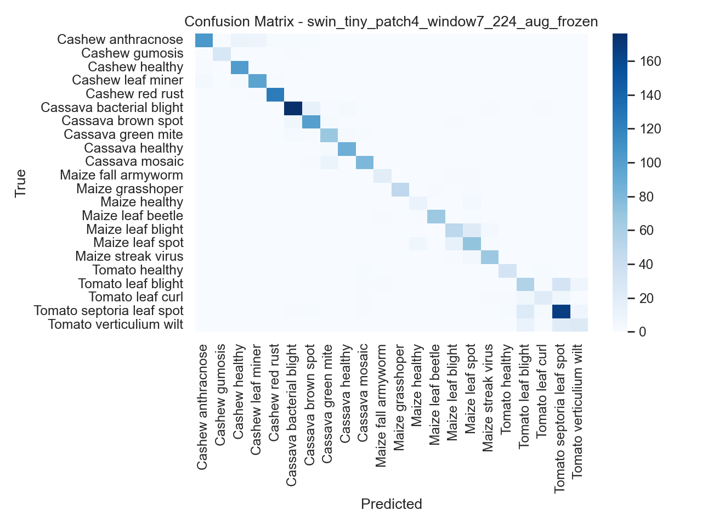
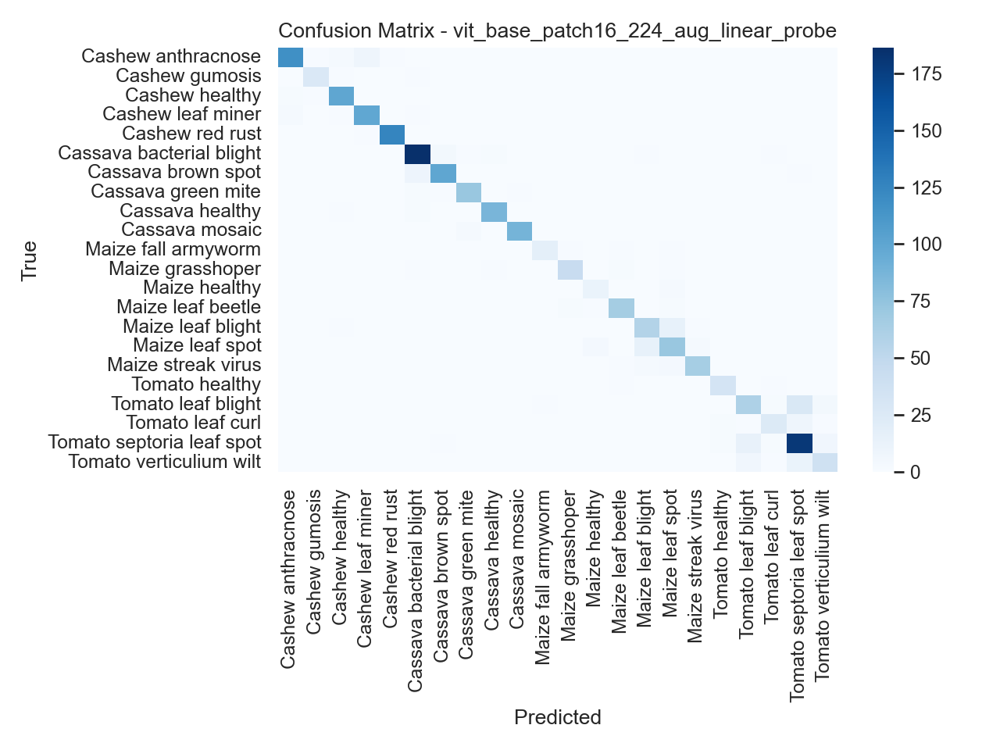
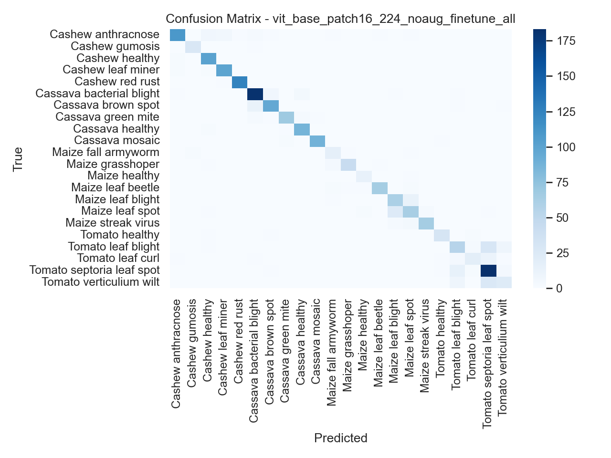
Confusion matrix chuẩn hóa theo dòng — cm_norm_*.png
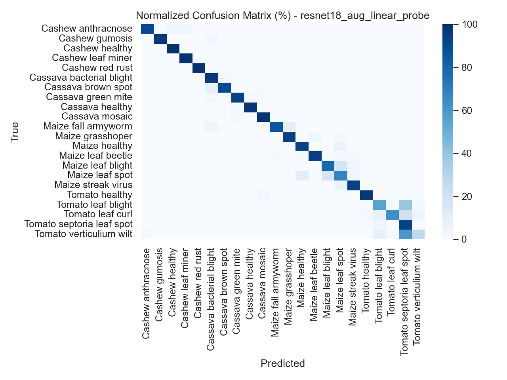
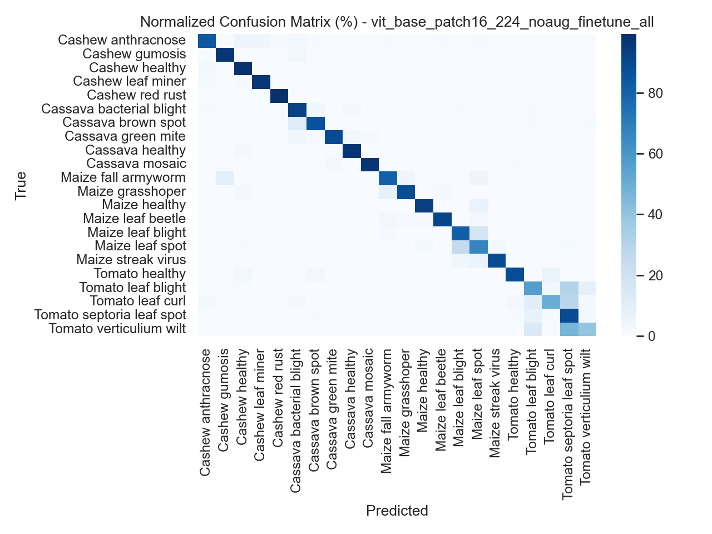
07 Trực quan hóa GradCAM / EigenCAM
Notebook dùng pytorch-grad-cam: GradCAM cho CNN (ResNet, EfficientNet), EigenCAM cho ViT/Swin khi bật use_eigen.
Dưới đây là export trực tiếp từ thư mục Image_DL.
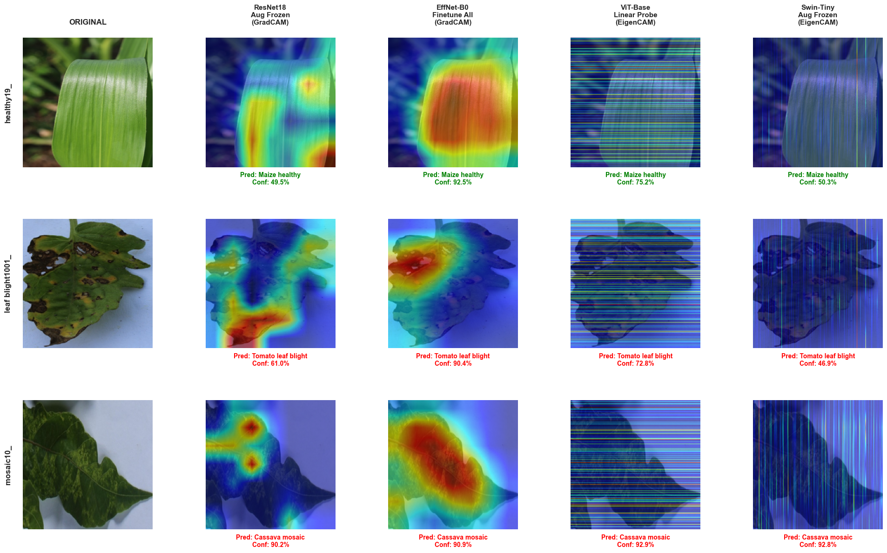
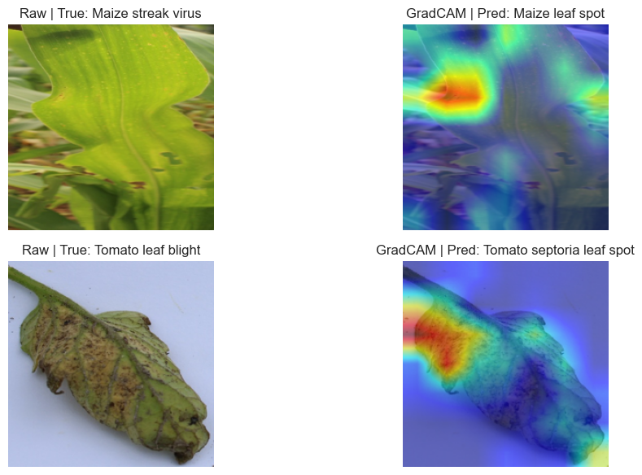
08 Thử nghiệm trực tiếp trên Gradio — Hugging Face Space
Phần cuối notebook xây giao diện Gradio: chọn backbone / cấu hình đã train, tải trọng số và tiền xử lý tương ứng, hiển thị xác suất lớp. Khi deploy Space HF, nhúng iframe hoặc liên kết trực tiếp vào khung dưới.
[Tên demo — ví dụ: Crop Pest / Disease Classifier]
[Nhóm / môn học — placeholder]
Phân loại ảnh vào 22 nhãn (crop pest & disease). Models: bốn backbone timm × (aug / no aug) × frozen / linear_probe / finetune_all — checkpoint đã lưu theo từng run.
Embed HF Space (placeholder):
<iframe src="[YOUR_SPACE_URL]" …></iframe>